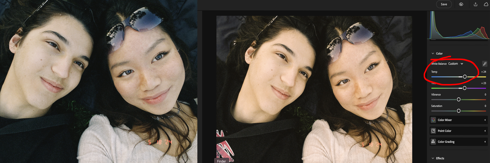
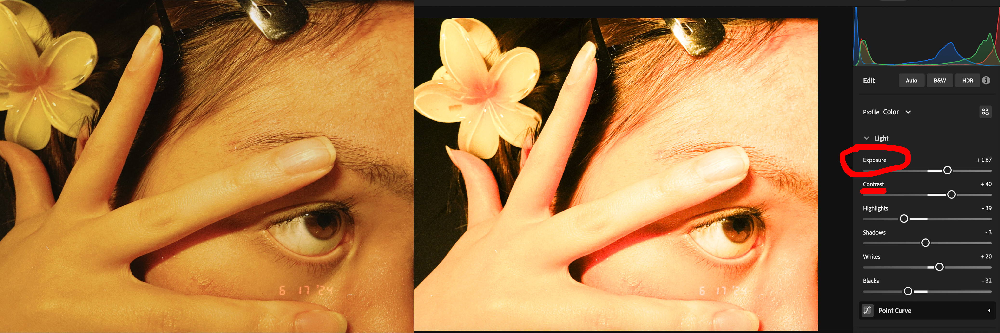
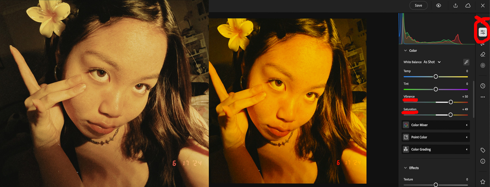
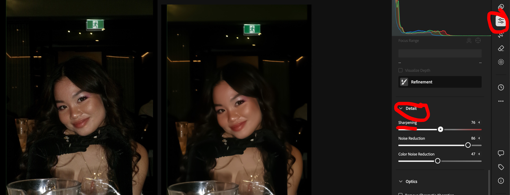

In this guide, Adobe Lightroom is the editing software used. For context, it is an accessible editing software that is effective and simple to learn. The app also provides the proper features and tools to make your photos look as polished as possible. Disclaimer, the app may be a bit complicated to learn, but we'll try our best to simplify the basics for you! We will cover the basic things that you might want to edit, and NOT ABSOLUTELY EVERYTHING. Everything else can be on Adobe's official tutorial website here
Adjusting colour temperature
This means if you want your photos to appear 'cooler' or 'warmer'. It's if you want warm colours (reds, oranges, yellows) or cooler colours (blues, purples, greens).
You can use Lightroom for this feature, where it has a series of colour sliders you can use to your heart's content. This can help emphasise certain subjects in your photos or create a new atmosphere.
Exposure and Contrast
Exposure refers to the general brightness of the image. Contrast is the balance of shadows and lights in the photograph.
sAdjusting these components controls how dramatic the shadows and light appears.
Using Lightroom, your photos can appear like this:
Vibrancy and Saturation
The vibrancy of an image refers to how intense and prominent the colours are in the photo. But it excludes skin tones and tries to prevent over-saturation.
Saturation is the vividness of all the colours applying to everything in the photo.
You can adjust these aspects by these sliders on Lightroom
Sharpening
This step may be subtle, but can make all the difference with the final product of your photo. Sharpening is increasing the clarity of details in your photo. It then increases the quality of your photograph in return.
In Lightroom, the sharpening option is here:
